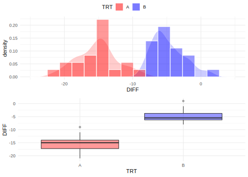
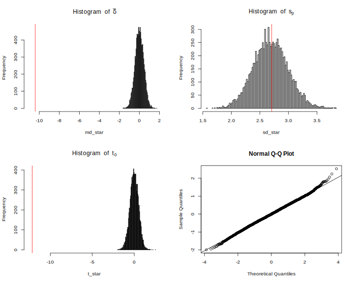
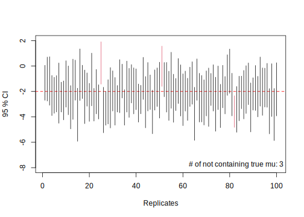
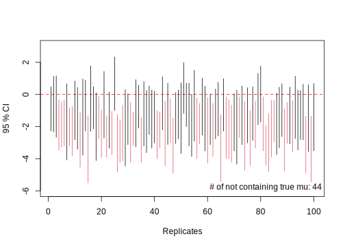
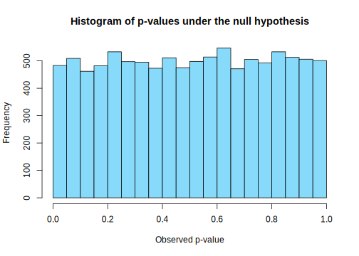
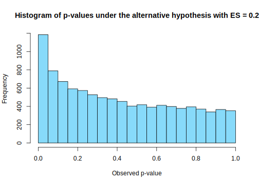
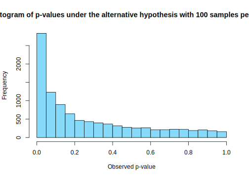
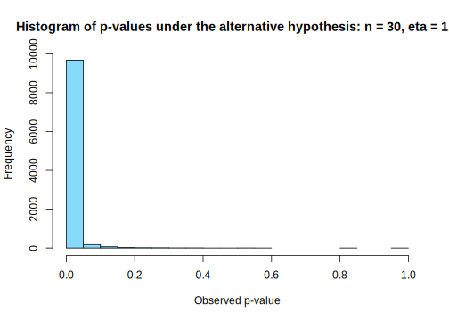

10.4 시뮬레이션과 통계학
혈압강하제 임상시험
DBP.txt: 통계패키지활용 Github 저장소에서 데이터 확인 가능
- 1960년대 중반 미국에서 실시한 고혈압 치료제 유효성 확인을 위한 임상시험 결과 데이터
- 총 40명의 고혈압 환자를 대상으로 임상시험을 실시했으며, 랜덤하게 환자를 고혈압 치료제 투여군(A)과 위약군(B)에 균등하게 배정
- 기처지(baseline,
DBP1) 측정 이후 월 단위로 4 번 이완기 혈압(diastolic blood pressure, DBP)을 측정(DBP2~DBP5) - 유효성 평가는 기저치 대비 투약 4 개월 후 DBP의 변화(감소)량(
d = DBP5 - DBP1)이 두 군간 차이를 보이는지…
- 데이터 요약
# 데이터 불러오기
DBP <- read_delim("data/DBP.txt", delim = "\t")Rows: 40 Columns: 9─ Column specification ────────────────────────────
Delimiter: "\t"
chr (2): TRT, Sex
dbl (7): Subject, DBP1, DBP2, DBP3, DBP4, DBP5, Age
ℹ Use `spec()` to retrieve the full column specification for this data.
ℹ Specify the column types or set `show_col_types = FALSE` to quiet this message.# 변화량 변수 추기
DBP <- DBP %>%
mutate(DIFF = DBP5 - DBP1)
# 각 투약군 별 변화량 측정값
DBP$DIFF[DBP$TRT == "A"] [1] -9 -15 -21 -14 -11 -15 -19 -18 -11 -18 -16 -14 -15 -19 -13 -14 -15 -17 -14
[20] -16DBP$DIFF[DBP$TRT == "B"] [1] -1 -6 -5 1 -7 -4 -4 -6 -6 -7 -2 -8 -6 -5 -6 -8 -7 -4 -2 -3# 요약 통계량
DBP %>%
group_by(TRT) %>%
summarise(N = n(),
Mean = mean(DIFF, na.rm = TRUE),
SD = sd(DIFF, na.rm = TRUE),
Min = min(DIFF, na.rm = TRUE),
Max = max(DIFF, na.rm = TRUE),
Median = median(DIFF, na.rm = TRUE),
Q1 = quantile(DIFF, probs = 0.25),
Q3 = quantile(DIFF, probs = 0.75)) %>%
kbl %>%
kable_paper| TRT | N | Mean | SD | Min | Max | Median | Q1 | Q3 |
|---|---|---|---|---|---|---|---|---|
| A | 20 | -15.2 | 2.966479 | -21 | -9 | -15.0 | -17.25 | -14.00 |
| B | 20 | -4.8 | 2.419221 | -8 | 1 | -5.5 | -6.25 | -3.75 |
- 데이터 시각화
# 변화량 데이터의 분포 확인(치료약에 대해서)
## ggplot 사용
# require(tidyverse)
require(ggpubr)
DBP %>%
ggplot() +
aes(x = DIFF, fill = TRT) +
geom_density(color = "white",
alpha = 0.2) +
scale_x_continuous(limits = c(-25, 5)) +
geom_histogram(aes(y = ..density..),
color = "white",
binwidth = 1.8, alpha = 0.4) +
scale_fill_manual(values = c("red", "blue")) +
theme_minimal() -> p1
DBP %>%
ggplot() +
aes(x = TRT, y = DIFF, fill = TRT) +
geom_boxplot(alpha = 0.4) +
scale_fill_manual(values = c("red", "blue")) +
theme_minimal() -> p2
# 두 개 플롯을 한 화면에 표시하기 위한 함수
ggarrange(p1, p2, ncol = 1, common.legend = TRUE)
위 데이터로부터 어떤 결론을 도출할 수 있을까?
- 혈압치료제 A는 4 개월 복용 후 DBP를 감소시키는가?
- 위약 B를 4 개월 복용 후에도 DBP를 감소 시키는가?
- 치료약 A는 위약 B보다 효과가 있는가?
- 위약 대비 치료약 A의 효과는 어느 정도인가?
- 다른 고혈압 환자가 치료제 A를 복용하면 어떤 효과가 있을까?
require(tidymodels)
# Question 1-2: 일표본 t 검정
DBP %>%
mutate_if(is.character, factor) %>%
group_by(TRT) %>%
nest %>% # group 변수 별로 데이터 나누기
# split한 데이터셋 각각에 일표본 t-검정 실시
mutate(t_test_result = map(data, ~ t.test(.x$DIFF))) %>%
# ttest 결과로부터 통계량 추출 후 tibble로 변환
mutate(result = map(t_test_result, ~ tidy(.x))) %>%
select(TRT, result) %>%
unnest(cols = result) %>%
mutate_at(vars(statistic, conf.low, conf.high),
format, digits = 3) %>%
mutate(p.value = format(p.value, digits = 2)) %>%
select(-method, -alternative) %>%
set_names(c("Treatment", "$\\hat{\\delta}$", "t-value", "p-value", "df",
"LCL (95%)", "UCL (95%)")) %>%
kbl(escape = FALSE) %>%
kable_paper| Treatment | \(\hat{\delta}\) | t-value | p-value | df | LCL (95%) | UCL (95%) |
|---|---|---|---|---|---|---|
| A | -15.2 | -22.9 | 2.6e-15 | 19 | -16.6 | -13.8 |
| B | -4.8 | -8.87 | 3.5e-08 | 19 | -5.93 | -3.67 |
# Question 3-4: 독립 이표본 t 검정
t.test(DIFF ~ TRT, data = DBP, var.equal = TRUE)
Two Sample t-test
data: DIFF by TRT
t = -12.15, df = 38, p-value = 1.169e-14
alternative hypothesis: true difference in means between group A and group B is not equal to 0
95 percent confidence interval:
-12.132758 -8.667242
sample estimates:
mean in group A mean in group B
-15.2 -4.8 중요 용어
모집단(population): 조사/실험/연구 등에서 관심의 대상이 되는 모든 개체의 관측값, 사건, 항목, 측정단위의 집합 \(\rightarrow\) 획득한 데이터가 랜덤하게 표집되었다고 가정하는 분포 또는 집단
- 대한민국 20대 남녀을 대상으로 측정한 관찰값(예: 키, 몸무게, 설문지, 혈액검사, ECG, EEG 등)
모수(parameter): 모집단의 특성 또는 분포를 정의하는 알려지지 않은 상수(수식 표현 시 일반적으로 greek 문자로 표시)
- 이항분포(binomial distribution): 성공 또는 실패 중 하나가 결과로 나오는 실험을 \(n\) 번 시행했을 때 성공이 나올 확률 \(\theta\)
- 정규분포(normal distribution): 평균 \(\mu\), 표준편차 \(\sigma\)
가설검정(hypothesis testing): 표본으로부터 얻은 정보를 토대로 모집단에 대한 특정 가설을 받아들이거나(accept) 혹은 기각(reject)을 위한 통계적 절차
귀무가설(null hypothesis): 모수에 대한 기존의 사실 또는 디폴트 값
- 두 측정 변수 간 연관성이 존재하지 않음/ 두 집단 간 평균의 차이가 없음 …
- \(H_0: \mu_X = \mu_Y\), \(\rho_{XY} = 0\), …
대립가설(alternative hypothesis): 모수에 대해 귀무가설과 대립해 증명하고 싶은 사실 또는 연구자가 입증하고 싶어하는 가설
- \(H_1: \mu_X \neq \mu_Y\), \(\rho_{XY} \neq 0\)
1종 오류(type I error): 사실인 귀무가설을 기각할 사건(오류)
2종 오류(type II error): 대립가설이 사실인데 이를 기각한 사건 = 귀무가설이 거짓인데 귀무가설을 기각하지 않은 사건
P 값(p-value): 귀무가설이 참일 때 실제 데이터가 보여준 정도로 특이한 값이 관측될 확률 \(\rightarrow\) 귀무가설 하에서 실제 데이터로부터 얻은 통계량이 관찰된 것과 같거나 그 이상의 극단적 결과를 얻을 확률 \(\rightarrow\) 귀무가설이 참이라는 검정 통계량을 바탕으로 귀무가설을 기각했을 때 실제로 제 1종 오류를 범할 최대 확률
- p-value = 0.5: 귀무가설 하에서 주어진 데이터로부터 얻은 통계량보다 크거나 작은 값들이 두 번에 한 번 꼴로 관찰 \(\rightarrow\) 귀무가설을 기각하기에 충분한 근거가 아님
- p-value = 0.0001: 귀무가설 하에서 데이터로부터 획득한 통계량만큼의 값을 관찰할 확률이 매우 낮음 \(\rightarrow\) 귀무가설 기각하기에 충분한 근거
표본(sample): 통계적 처리를 위해 임의의 모집단으로부터 관찰된 일부 관찰값 또는 측정값의 집합
용어 연결(DBP 예제)
- 모집단: 미국 또는 지구 상 존재하는 모든 고혈압 환자
- 모수: 고혈압 환자에 치료약(A)와 위약(B)을 투여 했을 때, 기저치 대비 4개월 후 DBP 변화량의 평균
- 표본: 랜덤하게 표집된 전체 40명의 고혈압 환자(각 투여군 당 20 명씩 무작위로 배정된 고혈압 환자)
- 통계량: 각 투여군 별 기저치 대비 4개월 후 DBP 변화(감소)량의 평균
- 귀무가설: 치료약 A와 위약 B를 투여 했을 때 두 집단 간 DBP 변화(감소)량은 차이가 없다.
- 대립가설: 치료약 A를 투여 했을 때 DBP의 기저치 대비 변화(감소)량은 위약군에 비해 크다(같지 않다).
- 1종 오류: 실제 치료약 A와 위약 B의 DBP 변화량이 차이가 없음에도 불구하고 차이가 있다고 결론내릴 오류
- 2종 오류: 실제 치료약 A와 위약 B의 DBP 변화량이 차이가 있는데 이를 감지하지 못해 차이가 없다고 결론내릴 오류
- P 값: 실제 두 투약군 간 차이가 없을 때 데이터가 보여준 두 군간 평균 변화량이 관찰된 값 이상의 극단적 결과를 얻을 확률
표본분포
통계학의 가장 중요한 개념: 우리가 현재 관측한 데이터는 특정 모수를 갖는 모집단에서 관측될 수 있는 여러 가능한 데이터 중 하나임. 예를 들어 DBP 예제처럼 또 다른 40명을 추출해 동일한 임상시험을 진행한다고 하면 DBP 변화량은 현재 데이터와 동일한 관찰값을 가지진 않을 것임. 즉, 표본을 추출할 때 마다 표본 간 그리고 표본 내 자연스러운 변동이 존재할 것임. 빈도론적 관점에서 통계학은 모집단으로부터 각기 다른 표본(일종의 평행우주)을 무수히 많이 추출 했다고 보고 이를 일반화 하는데서 모든 추론이 시작됨.
통계량(statistics): 모수를 추정하기 위해 표본(데이터)로부터 계산된 값(일반적으로 알파벳으로 표시)
- 표본평균 \(\bar{X}\), 표본분산 \(s^2\)
- 통계량은 확률변수(random variable)
표본푼포(sampling distribution): 통계량의 분포. 즉, 여러 평행우주(표본)으로부터 도출한 각기 다른 값을 갖는 통계량이 이루는 분포
실제 관찰한 데이터 외에 “평행우주”로 지칭되는 나머지 표본은 관측되지 않은 값 \(\rightarrow\) 시뮬레이션을 통해 가상의 평행우주를 생성 가능함
Figure 10.4: 모집단, 표본, 통계량, 표본분포 관계
DBP 예제에서 독립 이표본 t-검정을 시뮬레이션을 통해 확인
# 1. 현재 획득한 표본으로부터 필요한 통계량 계산
n1 <- n2 <- 20
n <- n1 + n2 # 전체 표본 수
mu_real <- tapply(DBP$DIFF, DBP$TRT, mean)
sigma_real <- tapply(DBP$DIFF, DBP$TRT, sd)
delta_real <- -diff(mu_real)
sp <- sqrt(mean(sigma_real^2))
tval <- delta_real/(sp * sqrt(1/n1 + 1/n2))
set.seed(38317)
# 귀무가설이 참(mu_a = mu_b)이라는 가정 하에서
# DBP 변화량의 두 군 간 차이에 대해 10,000개의 표본(평행우주) 생성
# 단, 분산(표준편차)은 현재 획득한 표본으로부터 구한
# 합동표준편차(분산)과 동일하다고 가정
# 표본 개수는 40개로 동일
B <- 10000
delta_star <- replicate(B, rnorm(n, 0, sp))
md_star <- apply(delta_star, 2, mean)
sd_star <- apply(delta_star, 2, sd)
t_star <- md_star/(sd_star * sqrt(1/n1 + 1/n2))
par(mfrow = c(2, 2))
hist(md_star, nclass = 100,
main = expression(Histogram~of~bar(delta)),
xlim = c(-11, 2))
abline(v = delta_real, col = "red")
hist(sd_star, nclass = 100,
main = expression(Histogram~of~s[p]))
abline(v = sp, col = "red")
hist(t_star, nclass = 100,
main = expression(Histogram~of~t[0]),
xlim = c(-12.5, 3))
abline(v = tval, col = "red")
qqnorm(t_star); qqline(t_star)
# p-value 계산: 귀무가설 하에 관찰한 통계량만큼 큰(작은) 값이 발생할 확률
length(which(t_star < tval))/B[1] 0중심극한정리
- 표본평균이 갖는 확률분포에 대한 정리
- 모집단의 분포와 관계 없이 표본의 크기(수)가 무한하게 크다면 표본평균의 분포는 정규분포에 근사
- 평균이 \(\mu\) 이고, 분산이 \(\sigma^2\) 인 임의의 모집단에서 추출한 표본 \(X_{1}, X_2, \ldots, X_n\) 의 평균 \(\bar{X}\) 의 분포는 \(n\rightarrow\infty\) 일 때(충분히 클 때), 근사적으로 평균이 \(\mu\) 이고 분산이 \(\sigma^2 /n\)인 정규분포를 따르고, \(Z=\sqrt{N}(\bar X - \mu)/\sigma\) 의 분포는 표준정규분포 \(N(0, 1)\)에 근사함.
- 통계적 추론의 핵심인 가설검정의 이론적 토대 마련
- 경험적으로 \(n \geq 30\) 이면 표본평균 \(\bar X\)는 정규분포를 따름
- 만약 표본의 크기가 무한하게 크다면( \(n\rightarrow\infty\) ), 표본평균의 분산은 0에 가까워 질 것이기 때문에 \(\bar X\) 를 모평균 \(\mu\)로 간주할 수 있음
# CLT 시각화를 위한 일반 함수
clt_test <- function(rep = 300, # 반복 수
n = 50,
mtrue = NULL,
strue = NULL,
FUN = rbinom,
plot = TRUE,
sim.out = FALSE,
...) {
# browser()
dots <- list(...)
x <- matrix(nrow = n, ncol = rep)
for (i in 1:n) {
x[i, ] <- apply(matrix(drop(
mapply(FUN, i*rep, MoreArgs = dots)), i, rep),
2, mean)
}
if (is.null(mtrue)) mtrue = NA
if (is.null(strue)) strue = NA
mf <- match.call()
FUN.name <- as.character(mf$FUN)
title_name <- switch(FUN.name,
rbinom = "Binomial distribution",
rpois = "Poisson distribution",
runif = "Uniform distribution",
rexp = "Exponential distribution",
rnorm = "Normal distribution",
rchisq = expression(chi^2 ~ distribution),
rt = "t distribution")
xlim <- quantile(x, c(0.005, 0.995))
# norm_line_x <- seq(xlim[1], xlim[2], length = 300)
if (plot) {
for (i in 1:n) {
dev.hold()
hist(x[i, ], freq = FALSE,
main = title_name,
xlab = substitute(italic(bar(X)[N == i]),
list(i = i)),
xlim = xlim)
lines(density(x[i, ]), col = "red")
if (!is.na(mtrue) && !is.na(strue)) {
curve(dnorm(x, mtrue, strue/sqrt(i)), col = "blue", lty = 2, add = TRUE)
legend("bottomright", legend = bquote(mu == .(sprintf("%.3f", mtrue)) ~
sigma/sqrt(n) ==
.(sprintf("%.3f", strue/sqrt(i)))),
bty = "n", cex = 1.5)
}
legend("topright", legend = bquote(bar(bar(x)) ==
.(sprintf("%.3f", mean(x[i,]))) ~
hat(sigma)[bar(x)] ==
.(sprintf("%.3f", sd(x[i,])))),
bty = "n", cex = 1.5)
dev.flush() #
Sys.sleep(0.01)
}
}
if (sim.out) return(x)
}
# binomial distribution
# p <- 0.25; size = 1
# clt_test(rep = 500, n = 50,
# FUN = rbinom, mtrue = size * p,
# strue = sqrt(size * p * (1 - p)), size = size, prob = p * size)
#
# clt_test(rep = 300, n = 30, FUN = rchisq, mtrue = 5, strue = sqrt(2*5), df = 5)이항분포
- 베르누이 시행(Bernoulli trial): 성공 또는 실패로 결과가 나오는 시행 또는 시험
- 베르누이 시행을 \(n\) 번 반복 했을 때, 성공이 나타난 횟수를 확률변수 \(X\) \(\rightarrow\) 이항확률변수(binomial random variable)
- \(n\) 번 베르누이 시행을 할 때, 각각의 시행은 서로 영향을 주지 않음 \(\rightarrow\) 독립
- 성공 확률이 \(\theta\) 이고, 실패확률이 \(1-\theta\) 일 때, 베르누이 시행을 독립적으로 \(n\) 번 시행했을 때 성공횟수에 대한 확률분포 \(\rightarrow\) 이항분포
- 이항분포의 확률질량함수
\[P(X = x) = f(x; n, \theta) = {n \choose x} \theta^x (1-\theta)^{n-x}\]
- 이항분포의 평균과 분산
\[\mu_X = n\theta,~\sigma^2_X = n\theta(1-\theta)\]
- CLT에 따른 표본 평균의 정규근사
\[ \bar{X}_N \stackrel{d}{\rightarrow} \mathcal{N}(\mu, \frac{\sigma^2_X}{N}) = \mathcal{N}(n\theta, \frac{n\theta(1-\theta)}{N}) \]
- 예제
확률 변수 \(X \sim \mathrm{binom}(n = 1, \theta = 0.25)\) 일때 표본분포의 CLT에 따른 표본 평균(300개의 평행우주로부터 표본 50개 추출) 의 정규 근사 과정
clt_test(rep = 300, n = 50,
FUN = rbinom, mtrue = size * p,
strue = sqrt(size * p * (1 - p)), size = size, prob = p)\(\theta = 0.25\), \(n = 1\)인 이항분포의 표본평균 정규근사
포아송 분포
단위 시간 안에 어떤 사건이 몇 번 발생할 것인지를 표현한 이산확률분포로 정해진 시간 안에 어떤 사건이 일어날 횟수의 기댓값을 \(\lambda\) 라고 할 때, 사건이 \(n\) 번 발생할 확률
- 확률질량함수
\[ P(X =x; \lambda) = \frac{\lambda^{x}e^{-\lambda}}{x!} \]
- 포아송 분포의 평균과 분산
\[ \mu_X = \sigma^2_X = \lambda \]
- CLT에 따른 표본 평균의 정규근사
\[ \bar{X}_N \stackrel{d}{\rightarrow} \mathcal{N}(\mu, \frac{\sigma^2_X}{N}) = \mathcal{N}(\lambda, \frac{\lambda}{N}) \]
- 예제
확률 변수 \(X \sim \mathrm{pois}(\lambda = 3)\) 일때 표본분포의 CLT에 따른 표본 평균(300개의 평행우주로부터 표본 50개 추출) 의 정규 근사 과정
l <- 3
clt_test(rep = 300, n = 50,
FUN = rpois, mtrue = l,
strue = sqrt(l), lambda = l)\(\lambda = 3\)인 포아송 분포의 표본평균 정규근사
연속 균일 분포
- 확률밀도함수
\[ f(X = x; a, b) = \begin{cases} \frac{1}{b - a}, & ~ -\infty < a < b < \infty \\ 0, & \mathrm{otherwise} \end{cases} \]
- 균일분포의 평균과 분산
\[\mu_X = \frac{1}{2}(a + b), ~ \sigma^2_X = \frac{1}{12}(b - a)^2\]
- CLT에 따른 표본 평균의 정규근사
\[ \bar{X}_N \stackrel{d}{\rightarrow} \mathcal{N}(\mu, \frac{\sigma^2_X}{N}) = \mathcal{N}(\frac{1}{2}(a +b), \frac{(b - a)^2}{12N}) \]
- 예제
확률 변수 \(X \sim U(0, 1)\) 일때 표본분포의 CLT에 따른 표본 평균(300개의 평행우주로부터 표본 50개 추출) 의 정규 근사 과정
a = 0; b = 1
clt_test(rep = 300, n = 50,
FUN = runif, mtrue = 0.5 * (a + b),
strue = sqrt((b - a)^2/12), min = a, max = b)\(X \sim U(a = 0, b = 1)\) 의 표본평균 정규근사
\(\chi^2\) 분포
- 확률밀도함수
\[ \frac{1}{2^{\nu/2}\Gamma(\nu/2)}x^{(\nu/2) - 1}e^{-x/2}, ~ x \in (0, +\infty),~\nu \in \mathbb{N} \]
- \(\chi^2\) 분포의 평균과 분산
\[\mu_X = \nu, ~ \sigma^2 = 2\nu\]
- CLT에 따른 표본 평균의 정규근사
\[ \bar{X}_N \stackrel{d}{\rightarrow} \mathcal{N}(\mu, \frac{\sigma^2_X}{N}) = \mathcal{N}(\nu, \frac{2\nu}{N}) \]
- 예제
확률 변수 \(X \sim \chi^2(\nu = 3)\) 일때 표본분포의 CLT에 따른 표본 평균(300개의 평행우주로부터 표본 50개 추출) 의 정규 근사 과정
nu = 3
clt_test(rep = 300, n = 50,
FUN = rchisq,
mtrue = nu,
strue = sqrt(2*nu), df = nu)\(X \sim \chi^2(\nu = 3)\) 의 표본평균 정규근사
신뢰구간의 정확한 의미
모평균 \(\mu\)에 대한 \((1 - \alpha) \%\) 신뢰구간의 일반적 형태(모분산을 알고 있다고 가정한 경우)
\[ \hat{\mu} \pm \Phi^{-1}(\alpha /2)\frac{\sigma}{\sqrt{n}} \]
- 신뢰구간: 같은 모형(분포)에서 반복적으로 표본을 추출해서 얻은 통계량에 대한 신뢰구간을 구했을 때 신뢰구간이 참 모수값을 포함할 확률이 \((1 - \alpha) %\)가 되도록 만들어진 구간
- 주어진 확률\((1 - \alpha) \%\) (신뢰계수)에 대해 표본분포의 통계량이 모집단 모수에 포함되는 구간
- 모든 가능한 모수에 대한 표본 추정치의 신뢰구간 중 95 %가 모수를 포함
- “모수가 신뢰구간에 포함될 확률”이라는 해석은 정확한 해석이 아님.
예제: sleep 데이터
- 10명의 대상자가 수면제 1과 수면제 2를 복용 시 수면시간 증가량 데이터
- 군 별 기술통계량 요약
# 독립 이표본 t 검정에서 두 군간 평균 차이에 대한 95% 신뢰구간
sleep %>%
group_by(group) %>%
summarise(N = n(),
Mean = mean(extra),
SD = sd(extra)) -> desc_sleep
desc_sleep %>%
kbl() %>%
kable_paper| group | N | Mean | SD |
|---|---|---|---|
| 1 | 10 | 0.75 | 1.789010 |
| 2 | 10 | 2.33 | 2.002249 |
- 독립 이표본 t-검정
mean_diff <- -diff(desc_sleep$Mean); mean_diff[1] -1.58sp <- sqrt(mean(desc_sleep$SD^2))
tval <- mean_diff/(sp * sqrt(sum(1/desc_sleep$N))); tval[1] -1.860813# df = n1 + n2 - 2 = 10 + 10 - 2 = 18
p.value <- 2*pt(tval, df = 18); p.value[1] 0.07918671- 해당 데이터가 주어졌을 때 두 군간 평균 차이에 대한 95 % 신뢰구간
alpha <- 0.05
lcl <- mean_diff - qt(1 - alpha/2, 18) * sqrt(sum((desc_sleep$SD^2)/10))
ucl <- mean_diff + qt(1 - alpha/2, 18) * sqrt(sum((desc_sleep$SD^2)/10))
lcl; ucl[1] -3.363874[1] 0.203874# check
t.test(extra ~ group, data = sleep, var.equal = TRUE)
Two Sample t-test
data: extra by group
t = -1.8608, df = 18, p-value = 0.07919
alternative hypothesis: true difference in means between group 1 and group 2 is not equal to 0
95 percent confidence interval:
-3.363874 0.203874
sample estimates:
mean in group 1 mean in group 2
0.75 2.33 - 실제 \(X_1 \sim \mathcal{N}(1.0, 1.79^2)\), \(X_2 \sim \mathcal{N}(3.0, 2.0^2)\) 이라고 가정하고, 현재 획득한 표본 수 만큼 해당 분포로 부터 추출(\(n_1 = 10, n_2 = 10\)) 후, 두 군 간 평균 차이에 대한 95 % 신뢰구간을 구하는 작업을 100 번 반복
N <- 100
n1 <- n2 <- 10
m_true <- -2 # mu_x1 - mu_x2
mu_contain_count = 0
plot(c(1, N),
c(-8, 2),
type = "n",
ylab = "95 % CI",
xlab = "Replicates")
abline(h = m_true, col = "red", lty = 2)
set.seed(1313)
for (i in 1:N) {
x1 <- rnorm(n1, 1, 1.79)
x2 <- rnorm(n2, 3, 2.0)
md <- mean(x1) - mean(x2)
lcl <- md - qt(1 - alpha/2, n1 + n2 - 2) * sqrt((sd(x1)^2 + sd(x2)^2)/10)
ucl <- md + qt(1 - alpha/2, n1 + n2 - 2) * sqrt((sd(x1)^2 + sd(x2)^2)/10)
contain_mu <- lcl <= m_true & m_true <= ucl
if(contain_mu) mu_contain_count <- mu_contain_count + 1
segments(i, lcl, i, ucl, col = as.numeric(!contain_mu) + 1)
}
legend("bottomright",
legend = sprintf("# of not containing true mu: %d", N - mu_contain_count),
bty = "n")
- 위
sleep데이터의 결과가 모집단의 특성을 충분히 반영했다고 가정하고, 독립 이표본 t 검정에서 귀무가설이 참일 때 두 집단 간 평균 차이에 대한 95 % 신뢰구간이 0을 포함하는 빈도
m_true <- 0 # mu_x1 - mu_x2
mu_contain_count = 0
plot(c(1, N),
c(-6, 3),
type = "n",
ylab = "95 % CI",
xlab = "Replicates")
abline(h = m_true, col = "red", lty = 2)
set.seed(1313)
for (i in 1:N) {
x1 <- rnorm(n1, 0.75, 1.79)
x2 <- rnorm(n2, 2.33, 2.0)
md <- mean(x1) - mean(x2)
lcl <- md - qt(1 - alpha/2, n1 + n2 - 2) * sqrt((sd(x1)^2 + sd(x2)^2)/10)
ucl <- md + qt(1 - alpha/2, n1 + n2 - 2) * sqrt((sd(x1)^2 + sd(x2)^2)/10)
contain_mu <- lcl <= m_true & m_true <= ucl
if(contain_mu) mu_contain_count <- mu_contain_count + 1
segments(i, lcl, i, ucl, col = as.numeric(!contain_mu) + 1)
}
legend("bottomright",
legend = sprintf("# of not containing true mu: %d", N - mu_contain_count),
bty = "n")
10.4.0.1 P 값에 대한 이해
Simulation setting 1: 귀무가설이 참인 경우
- \(X \sim \mathcal{N}(\mu_{X}, \sigma^{2}_{X})\), \(Y \sim \mathcal{N}(\mu_{Y}, \sigma^{2}_{Y})\) 일 때,
- \(\mu_{X}=\mu_{Y}=100\) 이고 \(\sigma_{X}=\sigma_{Y}=20\)
- \(X\)와 \(Y\)의 분포로부터 \(n_X = n_Y = 30\) 개를 추출한 데이터로 독립 이표본 t-검정 후 p-value 값 획득
- 10,000 번 반복
nsim <- 10000
p <- numeric(nsim)
set.seed(19780904)
for (i in 1:nsim) {
x <- rnorm(n = 30, mean = 100, sd = 20)
y <- rnorm(n = 30, mean = 100, sd = 20)
p[i] <- t.test(x, y)$p.value
}
hist(p, main = "Histogram of p-values under the null hypothesis",
xlab = "Observed p-value", col = "#87DAFA")
\(X\)와 \(Y\)의 분포가 동일함에도 불구하고 관찰한 p-value의 4.8 % 가 0.05보다 작게 나타남.
Simulation setting 2: 대립가설이 참인 경우
- \(\mu_{X} = 100\), \(\mu_{Y} = 96\), \(\sigma_{X}=\sigma_{Y}=20\)
- 실제효과크기: \(\eta = 0.2\)
- 첫 번째 모의실험과 동일한 크기로 진행
set.seed(19780904)
for (i in 1:nsim) {
x <- rnorm(n = 30, mean = 100, sd = 20)
y <- rnorm(n = 30, mean = 96, sd = 20)
p[i] <- t.test(x, y)$p.value
}
hist(p, main = "Histogram of p-values under the alternative hypothesis with ES = 0.2",
xlab = "Observed p-value", col = "#87DAFA")
\(p<0.05\)인 비율: 11.8 %
Simulation setting 3: 대립가설이 참, 표본 크기를 증가시킨 경우
- \(\mu_{X} = 100\), \(\mu_{Y} = 96\), \(\sigma_{X}=\sigma_{Y}=20\)
- \(X\)와 \(Y\)의 분포로부터 \(n_X = n_Y = 100\) 개를 추출한 데이터로 독립 이표본 t-검정 후 p-value 값 획득
set.seed(19780904)
for (i in 1:nsim) {
x <- rnorm(n = 100, mean = 100, sd = 20)
y <- rnorm(n = 100, mean = 96, sd = 20)
p[i] <- t.test(x, y)$p.value
}
hist(p, main = "Histogram of p-values under the alternative hypothesis with 100 samples per group",
xlab = "Observed p-value", col = "#87DAFA")
\(p<0.05\)인 비율: 28.3 %
Simulation setting 4: 대립가설이 참, 효과크기가 1.0인 경우
- \(\mu_{X} = 100\), \(\mu_{Y} = 84\), \(\sigma_{X}=\sigma_{Y}=20\)
- \(X\)와 \(Y\)의 분포로부터 \(n_X = n_Y = 30\) 개를 추출한 데이터로 독립 이표본 t-검정 후 p-value 값 획득
set.seed(19780904)
for (i in 1:nsim) {
x <- rnorm(n = 30, mean = 100, sd = 20)
y <- rnorm(n = 30, mean = 80, sd = 20)
p[i] <- t.test(x, y)$p.value
}
hist(p, main = "Histogram of p-values under the alternative hypothesis: n = 30, eta = 1.0",
xlab = "Observed p-value", col = "#87DAFA")
\(p<0.05\)인 비율: 96.8 %
p-value와 “통계적 유의성”에 대한 미국 통계학회 성명
- P-value는 가정한 통계 모형이 데이터와 호환되지 않음을 나타낸다(P-values can indicate how incompatible the data are with a specified statistical model)
- P-value는 연구 가설이 참인 확률이나 데이터가 랜덤하게 생성된 확률을 측정하지 않는다(P-values do not measure the probability that the studied hypothesis is true, or the probability that the data were produced by random chance alone)
- 과학적 연구 결론 도출이나 비지니스 및 정책 결정 과정에서 p-value가 어떤 경계값(임계점)보다 크거나 작다는 것에 근거해서는 안된다(Scientific conclusions and business or policy decisions should not be based only on whether a p-value passes a specific threshold)
- 제대로된 추론을 위해서는 연구과정 전반에 대한 보고서와 투명성이 필요하다(Proper inference requires full reporting and transparency)
- P-value나 통계적 유의성은 효과의 크기나 결과의 중요성을 나타내지 않는다(A p-value, or statistical significance, does not measure the size of an effect or the importance of a result)
- P-value 자체만으로는 모형이나 가설에 대한 증거가 될 수 없다(By itself, a p-value does not provide a good measure of evidence regarding a model or hypothesis)